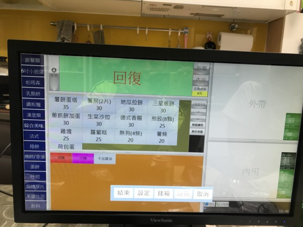
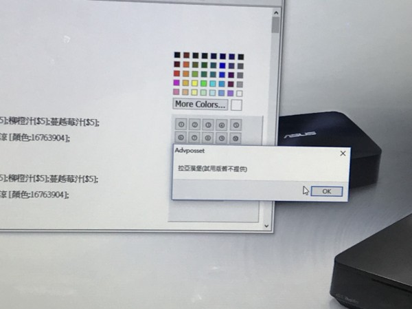

您好 雙螢幕 設定我搞定了 請問軟體我隨身碟也插入了開啟了 、請問更新怎麼更新 、只看到試用版軟體下載、還有版本顯示(回復)
菜單我要假設用拉亞 顯示試用版無法用


您好 雙螢幕 設定我搞定了 請問軟體我隨身碟也插入了開啟了 、請問更新怎麼更新 、只看到試用版軟體下載、還有版本顯示(回復)
菜單我要假設用拉亞 顯示試用版無法用


您好
USB插入後 執行程式試用字樣應該會消失 ,此時就是正式版
試用 安裝 更新 全都是同一份程式 同樣方法進行安裝
不會覆蓋舊有資料
拉亞漢堡試用版不提供的字樣 不管正式還是試用都會顯示 不影響操作
另外站長注意到您似乎是設定為網路主機 網路主機是給多台電腦同步使用
如果您只有一台電腦 請設定為 不同步 請參考這篇文章